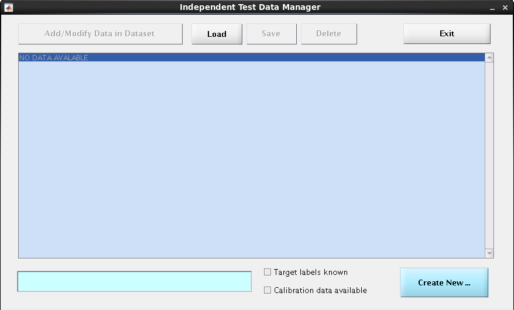

Out of Sample Cross-Validation {#mainmenu_OOCV}
Out of Sample Cross-Validation {#mainmenu_OOCV}#
External, out-of-sample cross-validation (OOCV) is a cornerstone of machine learning and is required for strong generalizability claims. This usually involves the application of the trained models used to predict targets in the CV2 data folds to a separate dataset that has been independently collected.
External validation relies on the trained models being completely separate to the OOCV data. For this reason, after completing the analysis the user must first lock analyses and start the NM application mode using the following procedure. As mentioned in the section on cross-validation, a form of external validation can be done within a machine learning analysis by selecting the leave-group-out option if the group comes from an external source (i.e., it is not from the same study or sample). However, mostly external validation is done when models from one analysis are applied to a completely different site and study.
It is important to note that within a machine learning framework external validation never means that new models are created within a different sample and then the results are compared (e.g., comparison of the beta coefficients or the p-value for significance). This is usually referred to as replication and is basically never the point of machine learning because it is a field that grew around translation and practical application of models. The aim of machine learning is to create models that can be applied without modification to external samples to facilitate predictions at another site. The ultimate aim is to be able to integrate models into clinical care globally.
For this critical function, what needs to occur is that the models that were applied to the test sets at the outer CV2 level need to be applied to another sample. Keep in-mind that when we refer to models in NeuroMiner then we are referring to the entire pipeline of operations that are applied to the data: from preprocessing to training. This can be done in multiple ways, depending on the method of calculating each model in the training data. In NeuroMiner, as described in the section on cross-validation, the optimal models are ultimately retrained in each of the CV1 folds before being applied to the outer test folds. This means that the same models will be applied to the external validation data. For example, if there are 5 folds on the outer cycle and 5 folds on the inner cycle then 5 x 5 = 25 model pipelines will be applied to the external validation data (assuming that the single best model is chosen for each training fold).
As stated in the section on cross-validation, in order to get a valid measure of generalizability it is critical that all operations included in the model training process are applied without modification to the external validation. We can also add that it is also critical that different model sets aren’t repeatedly applied to the external validation data so that the user can choose what parameters and options fit the external data the best this would completely undermine the reason for performing external validation. For this reason, in NeuroMiner features have been developed so that the user can’t easily re-run analyses with the external validation.
We will be using external validation functions for the machine learning competition in order to test the accuracy of the models you develop to a completely different testing set that has come from a different study and scanner. To do this, we need to load a NeuroMiner structure where there is an analysis or analyses that you would like to apply to the external validation sample and get the external validation data.
Once an analysis has been completed, from the MAIN INTERFACE, choose:
8: Lock analyses and start NM application mode.
Then select “y” to close the model discovery.
The MAIN INTERFACE will then change to include:
1: Load data for model application.
Select this option.
A dialogue box will appear (Fig 1{reference-type=”ref” reference=”fig:OOCV_GUI”}). To enter new data, the user first needs to know whether the Target labels are known (i.e., do you know what group the cases belong to if it is a classification?). If they are known then select the tick-box at the bottom right called Target labels known and if they are not (e.g., for the final competition submission) then do not select this box. The same procedure applies that is described in [mainmenu_3.1_input_data]{reference-type=”ref” reference=”mainmenu_3.1_input_data”}. Then select the Create New box at the bottom right and it will create a field in the middle blue center box that looks like this:
1: (0 cases); date: DATE; labels known: no
This is an empty template that needs to be filled with data by pressing the box at the top right called Add/Modify Data in Dataset and following this you will be taken to the data entry menu of NeuroMiner, which contains some of the same input settings as described in the original data entry exercise we completed at the start of the school. It is important to note that you cannot move the original data from its original location (including any masks used in the processing) otherwise NeuroMiner will fail at this step. You should be able to see the following interface like the following for ‘Input data into NM’:
1: Select images files [?]
2: IMPORT nifti
A point to note that the type of Input data has to be same as that of the original data type used. NeuroMiner automatically detects the previous input data type and asks accordingly. For example if the initially entered data was a ‘Spreadsheet like data’, the data to be entered in the model application mode has to be the same data type. If the user has entered covariates during the discovery analysis then NeuroMiner will ask for a covariates variable. Covariates always need to be entered into the matlab workspace as a variable (i.e., similar to when we were doing data entry for the discovery sample). Once, everything is setup, you should press:
6: IMPORT nifti\
{#fig:OOCV_GUI width=”0.8\linewidth”}
Once the data has been entered, you can return to the MAIN INTERFACE and now there will be an option
3: Set up parameters for model application
Select this option to see the options for defing the parameters in OOCV
settings:
1: Aggregate all base learnerns into one big ensemble
2: Model retraining mode [ as defined for CV model training ]
The first main option is ‘Ensemble mode’ which relates to an important
way that the models are applied to the external validation sample that
is relevant to all machine learning analyses. Upon entering this option,
you would see the following two options:
1: Aggregate ALL base learners into ONE ensemble
2: Compute mean decisions of CV1 partion ensembles before
aggregating
When you have a cross-validation design, it means that all models relate
to one of the outer, CV2, folds. However, when you apply the models to a
new sample, generally all the models will be applied to this sample
(this is the Aggregate ALL base learners into ONE ensemble option
below). This means that the procedure applied to the external validation
sample is different to what is applied to the discovery sample. For this
reason, NeuroMiner provides the option to apply each CV1 partition
ensemble for each CV2 fold before computing a mean of these decisions in
order to follow a more similar logic to the discovery sample procedure.
The next important option is the 2: Model retraining mode option. The two sub-options on entering it are:
1:As defined for CV training phase
2: Use all available CV data (CV1+CV2)
This is a critical aspect of NeuroMiner that needs to be understood from
a machine learning perspective. As a default, NeuroMiner does not save
the specific model parameters to disk because they generally consume a
large amount of disk space (e.g., 50G). Instead, NeuroMiner defines the
optimal parameters for the models during the preprocessing and training
procedures. It then retrains the models in the discovery sample using
these parameters before applying them to the external validation sample.
For this option, NeuroMiner gives the possibility to retrain the models
in the same way that they were trained on the discovery sample in 1 or
to ‘Use all available CV data (CV1+CV2)’. The first option is
recommended if the point of the analysis is to validate the original
models that will be displayed in a paper. The gold standard though would
be to save the models and use the exact models calculated in the
discovery cohort for the external validation cohort, which can be done
during Visualisation in NeuroMiner. The reason for this is that there
can be minor changes to the models when they use non-deterministic
procedures (e.g., gradient descent).
After setting up the parameters, simply exiting to the MAIN INTERFACE in order to accept the defaults here. In the MAIN INTERFACE, you will now see an option of
4: Apply classifiers to independent data
The user should select this option. Using the winning parameters from
your discovery analyses, the models will now be retrained in the
discovery data before being applied to the external validation data. You
can see this happening in the matlab command window. After it has been
completed, you can then go back to the MAIN INTERFACE and select:
5: Open NM Results Viewer
You will then be taken to the Results Display as before. If you click on
the second drop-down box then there will be an option to select the
external validation data that you entered.